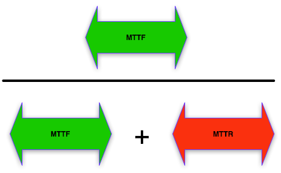
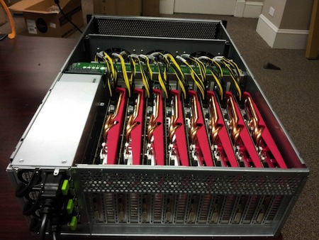
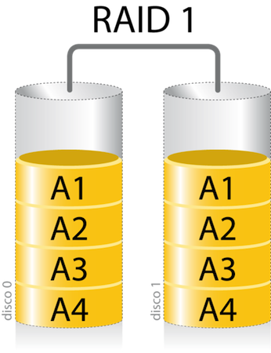

/me
Damien DUPORTAL
- Worldline (Atos)
- damien.duportal@worldline.com
- damien.duportal@gmail.com
- @DamienDuportal
- dduportal
/us
B3
- 20h ensemble
- 4h de cours - 16/05/14 - ajd
- 4h de TD - 22/05/14 - journée
- 12h de TP - 12/06/14 - journée
- Evaluation : QCM + TP
De quoi parle-t'on ? :
Sûreté de fonctionnement :
Ensemble de propriété d'un système garantissant à son utilisateur une confiance justifiée
De quoi parle-t'on ? :
Disponibilité :
Aptitude d'un système à rendre le service pour lequel il a été conçu
De quoi parle-t'on ? :
Indisponibilité ? Panne ? Erreur
De quoi parle-t'on ? :
Une indisponibilité, ça se mesure !
- MTBF : Mean Time Beetween Failure
- MTTF : Mean Time To Failure
- MTTR : Mean Time To Repair
De quoi parle-t'on ? :
Une indisponibilité, ça se mesure !

De quoi parle-t'on ? :
Calcul de la disponibilité
Rapport du temps en fonctionnement
avec le temps total

De quoi parle-t'on ? :
Haute disponibilité : la règle des 9
| Type de système |
Disponibilité (%) |
Indisponibilité (min/an) |
Classe de disponibilité |
| Non géré |
90 |
~50 000 |
1 |
| Géré |
99 |
~5 000 |
2 |
| Bien géré |
99,9 |
~500 |
3 |
| Tolérant aux fautes |
99,99 |
~50 |
4 |
| Haute disponibilité |
99,999 |
~5 |
5 |
| Très haute disponibilité |
99,9999 |
~0,5 |
6 |
| Ultra haute disponibilité |
99,99999 |
~0,05 |
7 |
De quoi parle-t'on ? :
Enjeux : Coût moyen d'1h d’indisponibilite
| Application |
Secteur d'activité |
Coût de l'indisponibilité |
| Courtage |
Finance |
6,45 M$ |
| Transaction par carte |
Finance |
2,6 M$ |
| VoD |
Loisirs |
150 000 $ |
| Vente sur catalogue |
Distribution |
90 000 $ |
| Réservation aérienne |
Transport |
89 500 $ |
- de la méthode
ET
- de la technique
- de la méthode
Principes méthodologiques :
- Obession de la mesure
- Identification du périmètre
- Gestion d'états
- Identification des points de rupture
- de la méthode
Obession de la mesure

- de la méthode
Identification du périmètre

- de la méthode
Gestion d'états

- de la méthode
Identification des points de rupture (Single Points Of Failure)
- Modélisation
- Benchmarks
- Tests
- Surveillance
- de la technique
Principes de conception :
- Redondance
- Mise en cluster
- Répartition de charge
- de la technique
Redondance ?

- de la technique
Redondance : élimination des SPOFs

- de la technique
Cluster :
Un agrégat (ou grappe) composé de noeuds, qui partagent des ressources
- de la technique
Mise en cluster :
Chaque noeud est autonome, et peut prendre la place d'un autre à la demande
Partage des ressources
- de la technique
Mise en cluster :

- de la technique
Mise en cluster :

- de la technique
Mise en cluster :

- de la technique
Répartition de charge

- de la technique
Répartition de charge
Objectif :
linéariser les comportements du cluster
Exemple du RAID
Redundant Arrays of Inexpensive Disks
(Berkeley - 1987)

Exemple du RAID
Raid 1 (miroir) : redondance

Exemple du RAID
Raid 3 (parité simple) : mise en cluster

Exemple du RAID
Raid 0 (réparti) : répartition de charge

Exemple du RAID
Raid 5 (réparti en parité)

Exemple du RAID
Raid 6 (réparti en double parité)